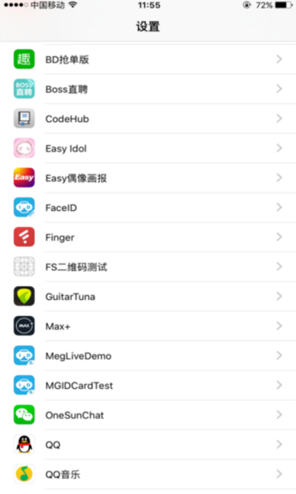
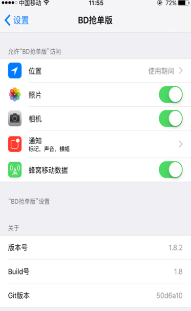
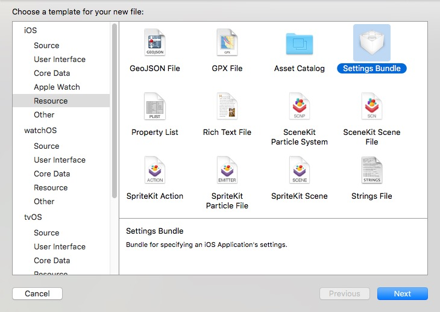
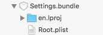
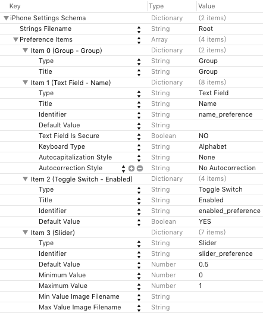
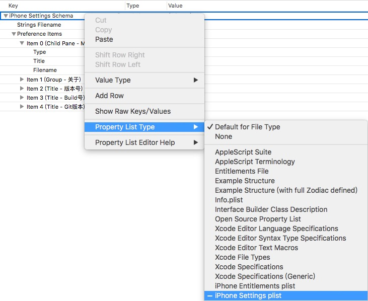
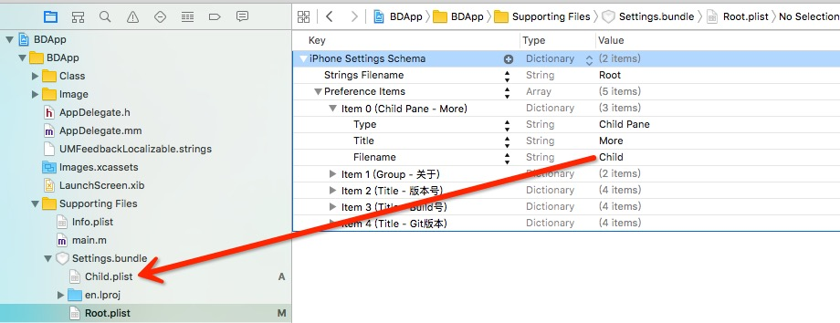
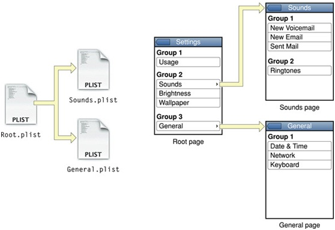

在系统设置中配置iOS应用的偏好设置,用来显示应用版本以及预设值某些偏好值等.
概述
界面设置
- 我们都知道,即便是最简单的计算机程序也会包含一个偏好设置窗口,用户可以在其中设置应用的专属选项;iOS端大部分APP设置项都通过
Cocoa preferences system : userdefaults system完成.我们可以看到,某些应用在设置中可以自定义一些偏好设置的选项.如下图的版本信息:
 
通过这个设置可以很方便的对应用的一些基本设置进行更改. - 想要完成这个设置功能,我们需要解决以下两个问题:
1.编写设置捆绑包Settings Bundle:
设置应用使用每个应用中设置捆绑包的内容构建出一个应用的设置视图。如果应用没有设置捆绑包，则设置应用不会显示出应用程序的任何信息。每个设置捆绑包必须包含一个名为Root.plist的属性列表，它定义了根级偏好设置视图。此属性列表必须遵循一种非常严格的格式。当设置应用启动时，它会检查每个应用程序的设置捆绑包并为包含设置捆绑包的每个应用添加设置组。
我们新建一个Settings Bundle:

不要修改包名称,系统会为我们创建出一个
Setting.bundle,en.lproj是语言包,用于全球化,暂时我们不考虑,点开Root.plist,

2.我们可以看到系统默认为我们生成了四个控件(目前总共有6种),由Item0-Item3分别代表组头,TextField,开关和滑块,他们分别有各自的属性可选,我们可以按需求设置他们的各种属性,但必须严格遵守这种格式. - 当我们添加一个新控件时,可以发现有一个名为Child Pane的类型(有时候Xcode有Bug,不会显示这种类型,需要手动添加其他六种类型中的一种,然后手动改Type的value为Child Pane,有智能提示),这个类型可以创建子页面,也就是说点击会push,因此我们需要创建子页面,这里可以选择手动创建.plist文件然后加到项目中,也可以按住option键再原地复制一个Root.plist然后修改一下,建议先责第二种方式,注意一定要把plist的key(默认为root)设置成
iPhone Settings Schema,如下图:

之后只需要将Root.plist的Child-Pane项的Filename设置成我们新创建的plist文件的文件名就可以了:

Child.plist中的设置同Root.plist.
注:
1.主界面一定对应Root.plist文件，需要新设置页面就要加入新的.plist文件，名字可以自定。
2.在Childpane中：Filename指定子页面的.plist文件名(不包含后缀)。
Title指定子页面标题，也是父页面中列表行中的内容。结构如下图：

OK，通过上面的方法，我们就可以在界面上完成需要的设置功能。下面是进行数据的操作。
数据操作
- 使用
NSUserDefaults实现preference的存储。
一般我们需要设置一些初始数据，也就是应用第一次打开就能将数据进行初始默认设置。
代码：1
2
3
4
5
6
7
8- (BOOL)application:(UIApplication *)application didFinishLaunchingWithOptions:(NSDictionary *)launchOptions
{
// Override point for customization after application launch.
NSDictionary *defaults = @{@"name_preference": @"哈哈",
@"slider_preference": @"呵呵"};
[[NSUserDefaults standardUserDefaults] registerDefaults:defaults];
return YES;
}
这里的key对应的是上边每个Item的identifier.
- 获取数据和更改数据完全是通过NSUserDefaults的一些操作.